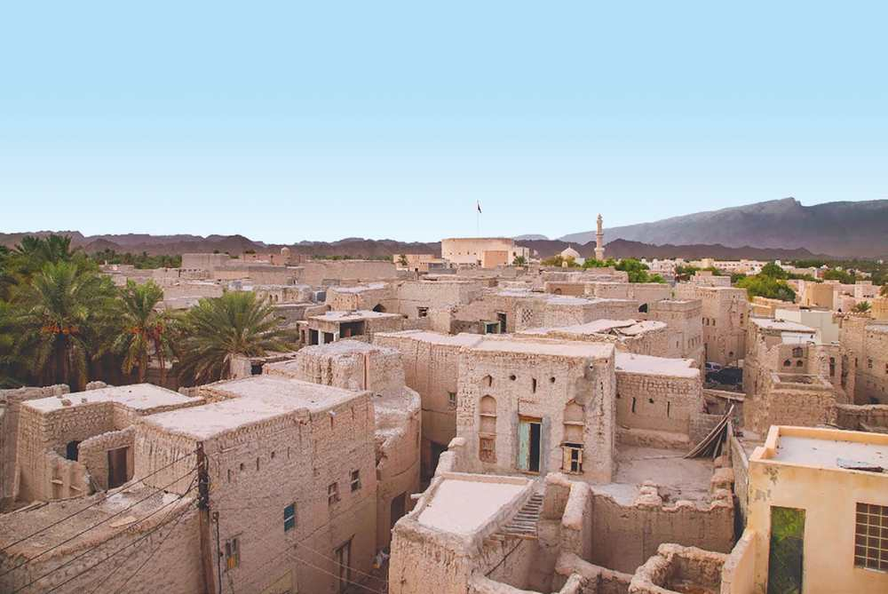
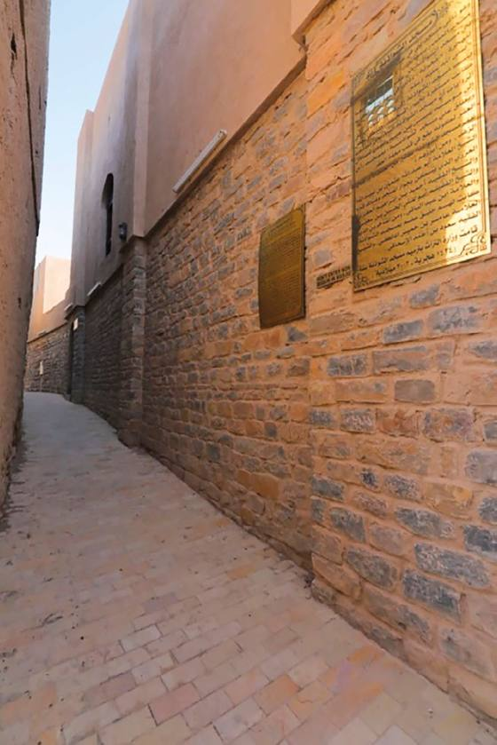
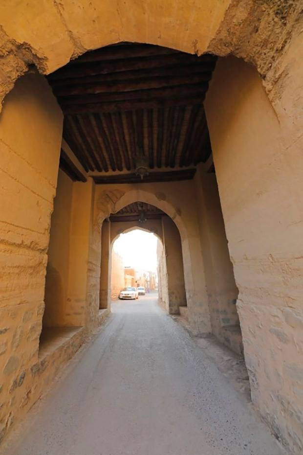
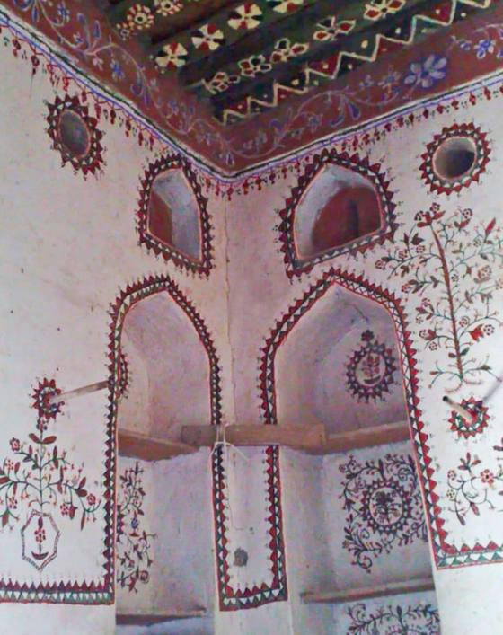

حارة العقر
نــزوى
اكتشف
الخريطة
الجولة
أكل وإقامة
EN

مقـرّ الحكـم العُمانـي
ثلاثمئة بيت
داخل سور واحد
من هنا سُنَّت الأوامر، وتحرّكت الجيوش، وانطلقت التوجيهات إلى الأساطيل العُمانية في المحيط الهندي.
ابدأ الجولة
تصفّح الحارة
ثلاثة أبواب للدخول
اقرأ الحارة، أو امشِ فيها، أو خطّط ليومك — كلٌّ من مدخله.
اكتشف
واحدٌ وثلاثون مدخلاً عن مساجد الحارة وأبراجها وأفلاجها وبيوتها، من الكتاب نفسه.
الخريطة
مخطط السور كاملاً: كل برج وكل صِباح، باسمه وموضعه وما يُعرف عنه.
خطّط زيارتك
جولة سيراً على السور والسوق، ونزلٌ ومقاهٍ داخل الحارة مع مواقعها.
من المداخل
كل المداخل الـ٣١ ←

مسجد
مسجد الشواذنة
محرابه من سنة ٩٣٦هـ، وثّق الناحت اسمه عليه بخط جميل.

تحصين
سور العقر
أسّسه الإمام سلطان بن سيف اليعربي، وبُني في سبع سنوات.

عمارة
الأبواب والأسقف
أخشاب هندية ونقوش تحمل تاريخ العمل واسم الصانع والإمام.
عن كتاب «حارة العقر» لسليمان بن محمد السليماني
أوقاف عقر نزوى